Ein kleines Display für den Schreibtisch, das Bitcoin und deinen Bitaxe im Blick behält: Kurs, Blöcke, Halving, Gebühren, Hashrate und jede gefundene Share – im Pixel-Design, ganz ohne Rechner.
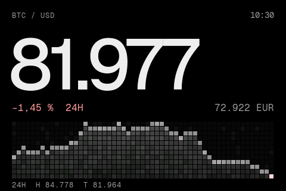
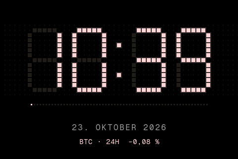
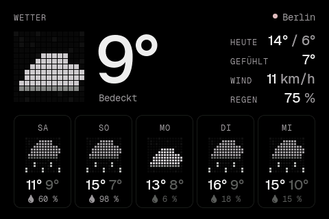
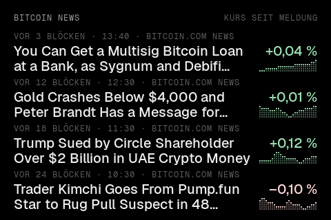
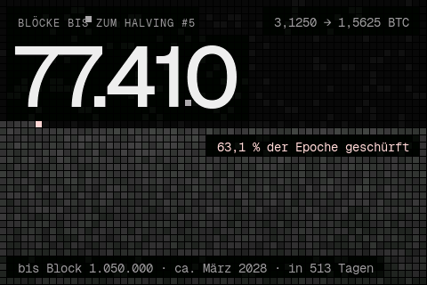
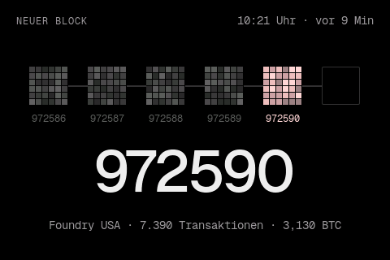
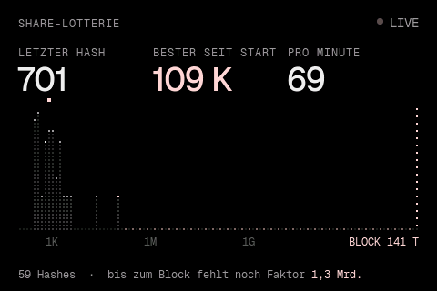
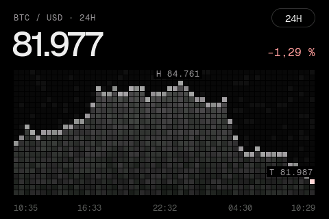
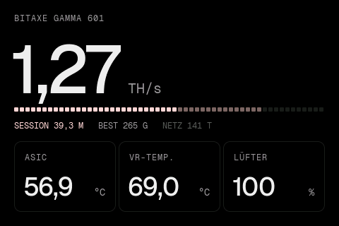
Vom Kurs über Wetter und News bis zur Share-Lotterie. Wischen oder an den Rand tippen, endlos im Kreis – jede Karte lässt sich einzeln abschalten.
Das Display holt alles selbst über WLAN: Kurse, Blockdaten, Wetter, Schlagzeilen und die Werte deines Bitaxe im Heimnetz. Keine Konten, keine API-Schlüssel.
Neue Versionen kommen automatisch aus den GitHub-Releases – mit Rückfall auf die alte Version, falls etwas nicht startet.
Jede Karte füllt den ganzen Bildschirm. Ohne Bitaxe zeigt das Deck Demo-Werte – so lässt es sich auch ohne Miner ausprobieren. Alle Bilder stammen direkt vom Gerät.
Das Pixel-Mosaik ist nicht nur Dekoration: Blöcke fallen, Sand rieselt, Ziffern rieseln um. Ein Blick genügt, um zu sehen, was im Netzwerk los ist.
Kommt ein neuer Block, fällt ein pinker Pixel-Block auf den freien Platz, die Verbindung leuchtet auf, und die Blockhöhe rollt wie ein Zählwerk auf den neuen Wert. Danach rückt die Kette einen Platz weiter. Auf Wunsch springt das Display dafür von selbst zu dieser Karte.
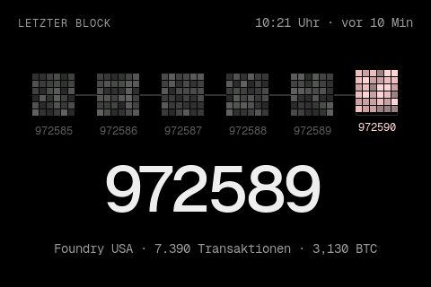
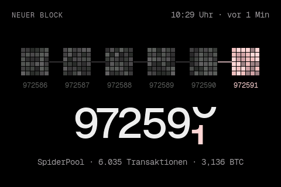
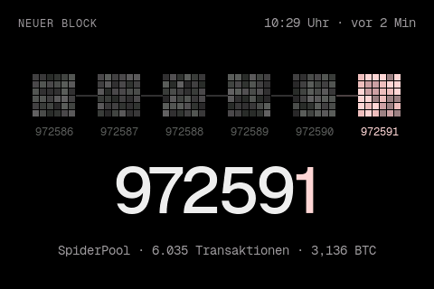
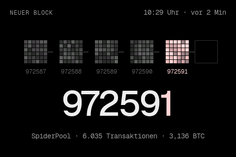
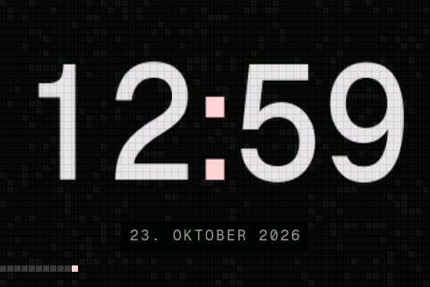
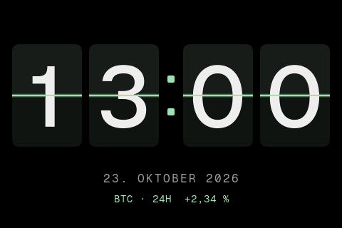
Die Uhr ist eine klassische LED-Anzeige aus quadratischen Punkten – wie die Punktmatrix des Charts. Unbeleuchtete Segmente schimmern schwach, beim Minutenwechsel blenden sie über, darunter läuft eine Sekundenreihe. Die LEDs leuchten hellgrün, wenn der Bitcoin-Kurs in den letzten 24 Stunden gestiegen ist, und pink, wenn er gefallen ist.
Der ganze Bildschirm steht für die laufende Halving-Epoche aus 210.000 Blöcken – eine Zelle entspricht rund 88 Blöcken. Unten liegt der schon geschürfte Teil, darüber der Rest bis zum Halving. Körner rieseln ständig herab, bei jedem neuen Block fällt ein pinkes auf die Kante.
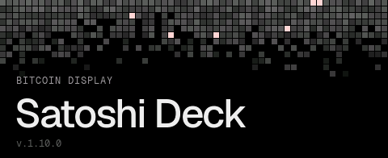
Beim Einschalten fallen Pixel von oben und bilden ein Band, darunter läuft der echte Startvorgang: Display, WLAN, Bitaxe, Kurs, Block. Der Boot-Screen bleibt stehen, bis alle Daten geladen sind – danach gibt es keine leeren Karten.
Im eingestellten Zeitfenster dimmt das Display nach 30 Sekunden ohne Berührung und zeigt alles in einer sanften Farbe. Dafür wird jedes Pixel kurz vor dem Übertragen in eine Helligkeitsstufe dieser Farbe umgerechnet – für alle Karten, Animationen und Hinweise. Eine Berührung weckt das Deck wieder.
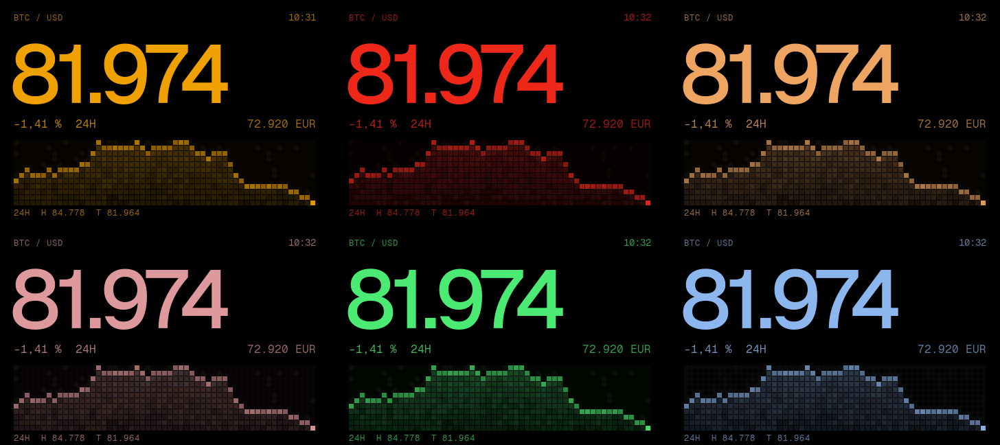
Das Deck kommt ohne Knöpfe aus. Alles Wichtige erreichst du am Display, den Rest auf einer Einstellungsseite im Browser.
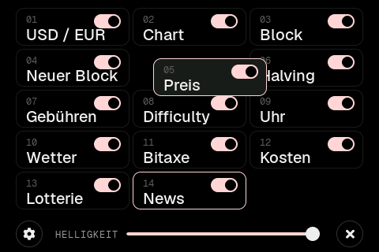
Vierzehn Kacheln, jede mit eigenem Schalter. Ausgeschaltete Karten erscheinen weder beim Blättern noch beim automatischen Seitenwechsel. Die aktuelle Karte ist pink umrandet. Kachel halten und ziehen legt die Reihenfolge fest – die anderen rücken nach.
Du brauchst ein WT32-SC01 Plus, ein USB-C-Kabel und einen Rechner für das erste Flashen. Danach aktualisiert sich das Deck selbst.
Im neuesten Release die Datei bitaxe_deck_full.bin laden – das Komplett-Image für die Erstinstallation.
Neuestes Release ↗Display per USB-C anschließen. Mit Python und esptool:
pip install esptool
python -m esptool --chip esp32s3 write_flash 0x0 bitaxe_deck_full.binMeldet das Tool „No serial data received“, das Kabel kurz ab- und wieder anstecken.
Ohne WLAN öffnet das Deck ein eigenes Setup-WLAN und zeigt einen QR-Code. Handy damit verbinden oder von Hand: WLAN SatoshiDeck-Setup, Passwort satoshi21. Dann im Browser http://192.168.4.1 öffnen und Heim-WLAN (2,4 GHz) sowie die IP-Adresse deines Bitaxe eintragen.
Später findest du die Einstellungen im Heimnetz unter der IP des Displays – QR-Code und Adresse zeigt die Konfiguration nach langem Drücken.
Das Deck fragt alle sechs Stunden das neueste Release auf GitHub ab. Gibt es eine neuere Version, lädt es sie verschlüsselt über HTTPS und installiert sie, sobald fünf Minuten niemand das Display berührt hat – oder sofort per Knopf in den Einstellungen.
Eigenständige Firmware in C. Alle Karten, Mosaike und Animationen werden auf dem Gerät selbst gezeichnet.
Mit ESP-IDF 5.3. Die Bibliotheken lädt der Build beim ersten Mal selbst herunter, alle Einstellungen kommen aus sdkconfig.defaults.
git clone https://github.com/mailmichaellehmann-crypto/bitaxe-deck.git
cd bitaxe-deck/firmware
. ~/esp/esp-idf/export.sh
idf.py build
idf.py -p /dev/cu.usbmodem1101 flash monitor